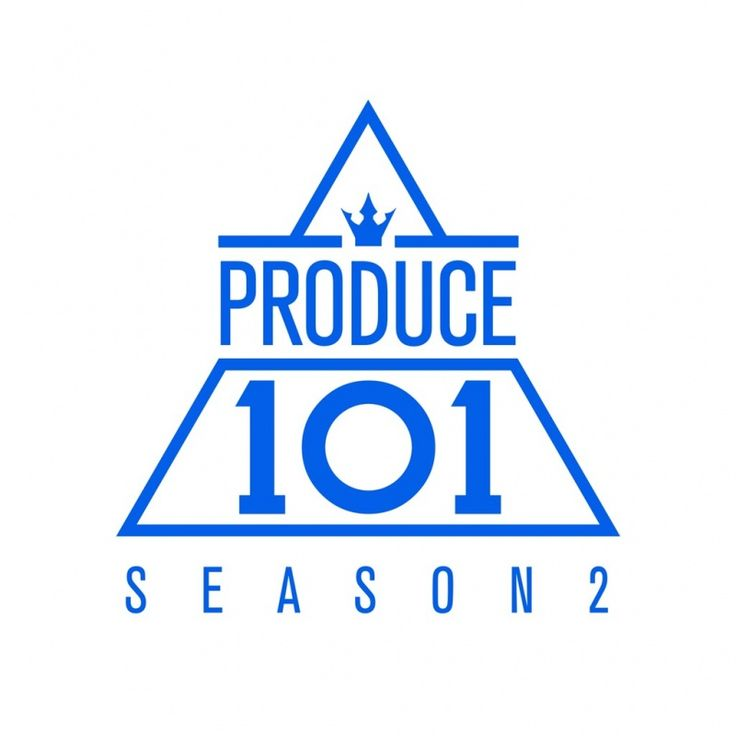

Produce 101 S2 is a korean survival show aired on Mnet in 2017. It is the second season of the original South Korean version of the franchise.
In the show, the public, referred to as 'national producers,' were given the task of creating a boy group by selecting 11 members from a pool of 101 trainees representing 54 entertainment companies.
This selection process involved online and live voting, with multiple elimination rounds. The public also decided on the group's concept, debut song, and name.
On June 16, 2017, during the live broadcast of the season finale, the final 11 members chosen to debut as Wanna One were announced. Over 16 million people participated in the voting for the finale, representing about 30% of South Korea's population.

Lee Euiwoong
Lee Euiwoong, also known as Lew, leader of Tempest was a contestant in Produce 101. He was elimiated in episode 10, ranking #23. After Produce 101 he debuted as a duo with fellow contestant Ahn Hyeongseop from 2017-2021. Before debuting in Tempest in 2022.
Introduction video
No name team performance
Ahn Hyeongseop
Member of Tempest, Ahn Hyeongseop was a contestant in Produce 101. He was eliminated in the finale, ranking #16.After Produce 101 he debuted as a duo with fellow contestant Lee Euiwoong from 2017-2021. Before debuting in Tempest in 2022.